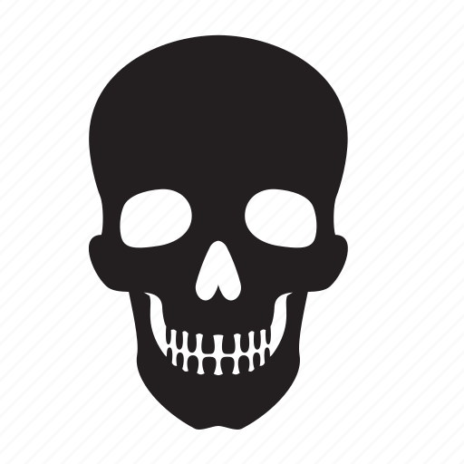

Cartes
- A la fin de votre tour, vous devrez n'avoir que 2 cartes en main maximum. Défaussez-en le cas échéant.
- Les cartes ne peuvent être défaussés que pendant votre tour.
- Les Steufs et les Consommable ont une valeur d'échange en Or, symbolisé par

- Les Steufs et les Consommable peuvent être gardés en main plutôt que joués directement.
- Les Steufs, Consommables et Lieux pourront avoir des effets actifs et passifs.
- Les actifs sont symbolisés par
- Les actifs ne peuvent être exécutés que lors des phases d'action de votre tour, sauf si le contraire est explicité dans la description de l'actif.
- Si ce n'est pas précisé, les actifs ne peuvent être utilisés qu'une fois par tour.
- Les passifs sont symbolisés par
- Les passifs ont en général une condition de déclenchement, par exemple : "Lorsque vous piochez un Steuf".
- Si cette condition n'est pas décrite, alors le passif s'applique en tout temps.
Personnage
- Les Personnages sont répartis sur deux axes : Moralité et Ordre.
- Moralité : Bon
 - Neutre
- Neutre  - Mauvais
- Mauvais 
- Ordre : Loyal
 - Neutre
- Neutre  - Chaotique
- Chaotique 
- Ces deux axes intéragiront avec certaines Cartes.
- Exemple : tous les Bon sont soignés d'une Blessure.
Blessure
- Le compteur de Blessure désigne la capacité maximale à prendre des dégâts.
- Lorsque vous parvenez à votre nombre maximale de Blessure, vous déplacez votre pion sur l'emplacement Seuil de la Mort (abrégé en SdM ou ).
- Lorsqu'un Personnage est au SdM :
- Il ne peut pas attaquer d'autres Personnages.
- Pour quitter cet état, il lui suffit de vous soigner d'une Blessure. Alors votre nombre de Blessure devient votre nombre maximal de Blessure - 1.
- Une Blessure infligée alors que vous êtes déjà au SdM ne change rien à votre compteur de Blessure ni au soin nécessaire pour en sortir.
- Néanmoins, elle est prise en compte pour les Cartes qui devraient intéragir avec la Blessure infligée.
Révélation du Personnage
- Tant qu'un Personnage est face cachée, il ne peut pas bénéficier de ses passifs ni de ses actifs.
- Attaquer un autre Personnage ne fait pas réveler votre Personnage, ni le sien.
- Vous pouvez révéler votre Personnage à tout moment, vous ne pourrez plus le remettre face cachée une fois révélé.
- Lorsqu'il est au SdM, un Personnage doit retourner sa carte face visible.
Steuf
- Vous ne pouvez équiper un Steuf que durant votre tour.
- Les Steufs ont plusieurs rangs de rareté : Commun, Rare, Épique et Légendaire.
- Lorsque vous piochez un Steuf Légendaire, vous devrez l'équiper ou le défausser immédiatement.
- Pour bénéficier de ses actifs et passifs, le Steuf doit être équipé.
Consommable
- Lorsqu'un Consommable est joué, il doit être défaussé une fois que son effet n'est plus en jeu.
- Par exemple : un Consommable avec un effet immédiat tel que soigner une blessure sera défaussé après utilisation.
- Au contraire, un effet qui durerait pendant plusieurs tours, le Consommable sera mis sur l'emplacement effet du pupitre du joueur affecté et ne sera défaussé qu'après l'expiration de l'effet.
Lieu
- Lorsqu'un Lieu est pioché, il doit être joué immédiatement.
- Il n'est défaussé qu'une fois son effet expiré, comme pour les Consommables.